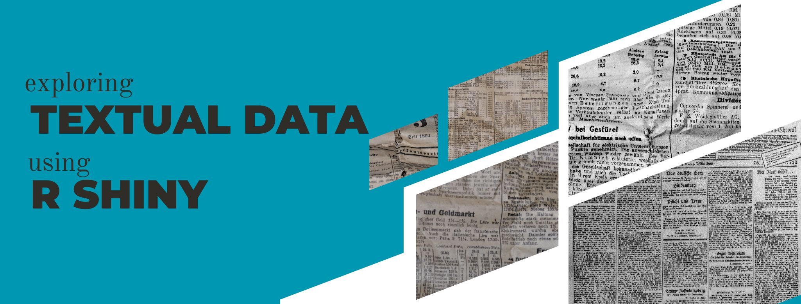
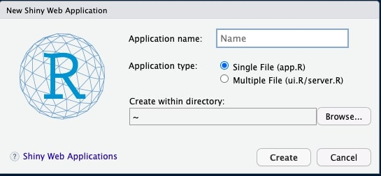
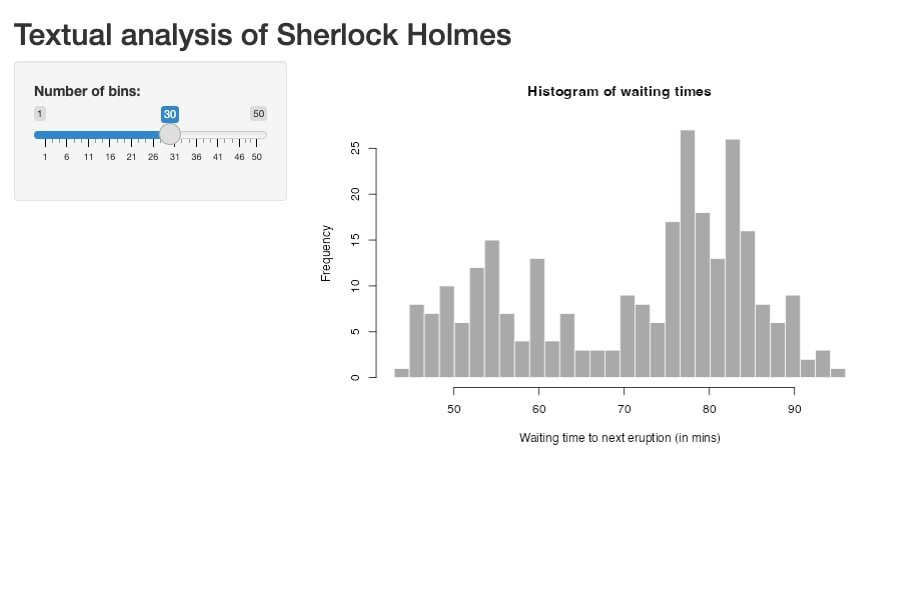
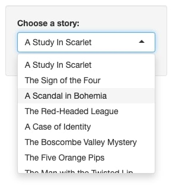
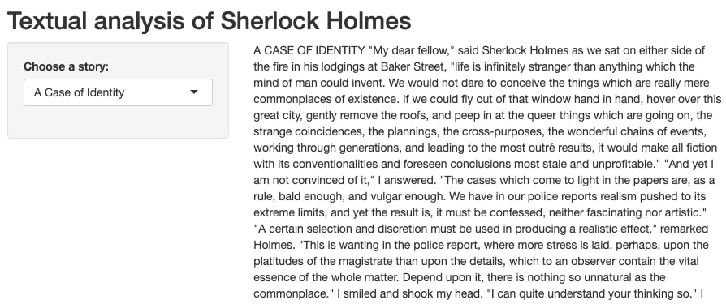
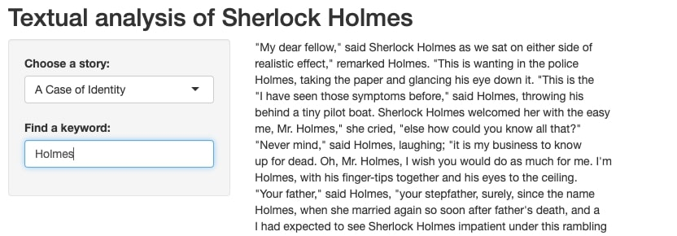
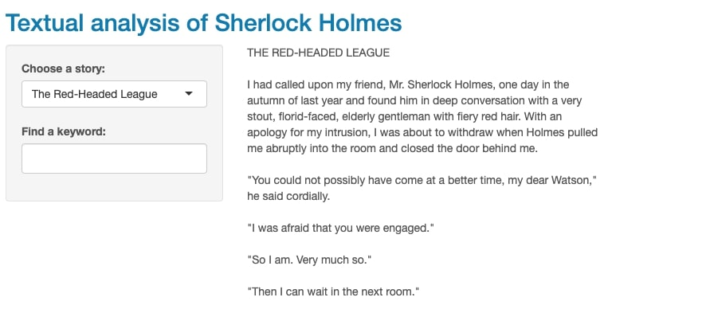

In previous blog posts, I discussed the use of software such as AntConc or Voyant to analyze corpus data. Even though these are very helpful, you can only use them to perform the range of default analyses they offer. But, what if you need more customization? Maybe you want to create your own graphs or explore your data in ways that go beyond traditional KWIC analyses and basic word frequencies. Well, then keep reading because that is totally possible!
In this blog post, I introduce R Shiny, which allows you to create a web-based interface (aka. a dashboard) to explore your textual data in any way you want.
To use R Shiny, you first need to download and install R, which you can find here. I also recommend installing R Studio, the most popular IDE for R.
Once you have R and R Studio installed, you can proceed to install R Shiny. In this case, R Shiny is an R package that you can install using the following command:
install.packages("shiny")
Don't forget you also need to load the package after installing it (you will have to do this every time you open R Studio):
library(shiny)
Now, you're ready to create a Shiny app!
Click on File > New File > Shiny Web App, and then in the window, give it a name and choose a directory.

Once you have done this, you will see that the new file already comes with some code in it. Specifically, this is what you should see:
The default name of your new file is app.R
Your code includes a function called ui, and
a function called server
At the end of your file, there is this command: shinyApp(ui = ui, server = server)
All R Shiny apps have two parts: a UI (user interface) and a server. The UI is what you see: graphs, fonts, colors, images, and so on. The server is what the app does but which you don't see: in this case, the functions and commands to analyze your data.
This means that you will have to tell R what to do with your data, as well as how to display it in the app. I will cover these two things later on. But first, let's import some data!
For this tutorial, I will use a corpus (R package sherlock) that contains the full texts of Sherlock Holmes stories, though you can use any textual data you want. To provide you with some context, this package comes with the holmes dataset, which has two columns: one that contains lines of text from the stories (text) and another one that contains the title of the story each line is taken from (book).
# Sample rows from the dataset
text book
29 CHAPTER I A Study In Scarlet
30 Mr. Sherlock Holmes A Study In Scarlet
31 In the year 1878 I took my degree of Doctor of Medicine of the A Study In Scarlet
32 University of London, and proceeded to Netley to go through the A Study In Scarlet
33 course prescribed for surgeons in the army. Having completed my A Study In Scarlet
34 studies there, I was duly attached to the Fifth Northumberland A Study In Scarlet
In addition to loading the sherlock package, I will also load the tidyverse package, which is very helpful to work with data.
Before diving into the analyses, I think it's important to look at the UI first to better understand what it does. The ui function contains some elements that you can either keep or modify.
The first element is titlePanel, which is the title of your R Shiny app. If you think of your app as a website, the title would be the name of your website and it would be displayed at the top of the page by default. I will change the current title (Old Faithful Geyser Data) to Textual analysis of Sherlock Holmes, which describes what my app is about.
You can take a look at what the app looks like now by clicking on the Run App button located on the upper menu. A new window will open up where you can see the app:

You can see that the R Shiny app now displays the new title. You will also see a graph (a histogram, in this case) accompanied by a slider that allows you to enter a value. This is based on random data provided to the R Shiny app via the server function, which we will modify later.
Basically, the goal is to display data from the Sherlock Holmes stories together with some components that will allow the user to filter and/or select different values or types of analyses.
Ok, so what other components are there? Actually, there are tons of them, and they're usually referred to as "widgets" or "Shiny widgets". You will usually specify widgets within the sidebarPanel section of your code. The idea here is to replace sliderInput with any other widget (or widgets) you want. These are some of the most popular ones:
| Widget | What it does |
|---|---|
| radioButtons | a set of radio buttons |
| checkboxGroupInput | a group of check boxes |
| selectInput | a box with choices to select from |
| textInput | a field to enter text |
| numericInput | a field to enter numbers |
To learn about all Shiny widgets and see real examples, visit this link.
For this tutorial, I will add a couple of Shiny widgets that will allow users to select one of the Sherlock Holmes stories and then run a simple KWIC search.
Once you master these basic things, you'll be ready to take your app further by adding visualizations, as well as other types of analyses, since the process is very similar.
If you remember, the holmes dataset contains a column called books with the titles of all the stories. I will add a selectInput widget so that the data can be filtered out to display only text from a given book.
First, I will create an R vector which contains the title of each story:
books = unique(holmes$book)
Now, I will add the selectInput widget to the `ui` function:
sidebarLayout(
sidebarPanel(
selectInput("book", # input ID (aka. a unique name for this widget)
"Choose a story: ", # label (aka. what the app displays)
books) # choices (aka. the vector)
),
If you click on the Run app button again, you will now see a drop-down menu in your app which lists all Sherlock Holmes stories.

This looks great, though when you select a title, nothing happens! That's because you first need to create an "output function". That is, you need to tell R that when you select a book from this drop-down menu, you want to see the text from that book in the UI.
To do that, you need to modify the second part of the ui function (called mainPanel) as well as the server function:
Just like with Shiny widgets to enter some input, we also have Shiny Outputs. For example, you can display a table, a graph, an image, or just text, like we want now. In mainPanel, I will include an HTML output (htmlOutput), which basically displays text using an HTML format. You can learn more about different Shiny outputs here.
mainPanel(
htmlOutput("displayedText" # output ID (aka. a unique name for this output)
)
)
In the server function, we need to do the filtering based on the title chosen. See how I used input$book (the input ID) as a placeholder for the title chosen as well as output$displayedText (the output ID).
server <- function(input, output) {
output$displayedText = renderUI({
# filter text based on the title selected
HTML(holmes %>%
filter(book == input$book) %>%
pull(text))
})
}
Ok, so now, when you run the app and you choose a story from the drop-down menu, you should finally see the text on the right.

Now, we will add a second Shiny widget to search for a specific keyword. That is, users will select a book from the drop-down menu and then they will type a keyword they want to find, so that only sentences containing that keyword will show up on the right.
The widget we need for this is textInput, and we will add it after our previous selectInput widget. Don't forget to add an input ID and a label:
sidebarLayout(
sidebarPanel(
selectInput("book",
"Choose a story: ",
books),
textInput("input_KWIC", # input ID (aka. a unique name for this widget)
"Find a keyword: ") # label (aka. what the app displays)
),
Once this is done, we also need to edit the server function so that it filters text based on the keyword chosen.
Here, we will simply edit output$displayedText to add a second filter function. I also recommend using a mutate function to edit the output a little bit. In this case, I added a an HTML break (br/) after each line of text so that the output is clearer.
output$displayedText = renderUI({
# filter text based on the title selected and KWIC
HTML(holmes %>%
filter(book == input$book) %>%
filter(grepl(input$input_KWIC, text, ignore.case = TRUE)) %>%
mutate(text = paste(text, '<br/>')) %>%
pull(text))
})
If you now run the app, you will be able to try this second widget. For example, I selected the story titled A Case of Identity and searched for the keyword "Holmes". On the right, I can see all sentences containing that keyword (one sentence per line).

Ok, so now the app is working, but it looks boring! Fortunately, we can customize the UI to make the app prettier.
The easiest option is to install the R package shinythemes and then use one of the available Shiny themes (you can take a look at them first here. You will have to add the name of the theme at the beginning of your UI function:
# I chose the "cerulean" theme
ui <- fluidPage(theme = shinytheme("cerulean"),
This is what the app looks like with that theme:

If you want to customize your app further, you can add CSS code to your app, as you would normally do with any other website. To get started, visit this link.
So far, I have described how to get started with R Shiny. But, what if you create a great app and you want other people to be able to see it and play around with it? In order to do that, you need to deploy your app.
You can host your app for free on shinyapps.io by creating an account. However, if you want to deploy more than 5 Shiny apps, you will have to switch to a paid plan. Alternatively, you can also host your Shiny app on a different platform, such as AWS.